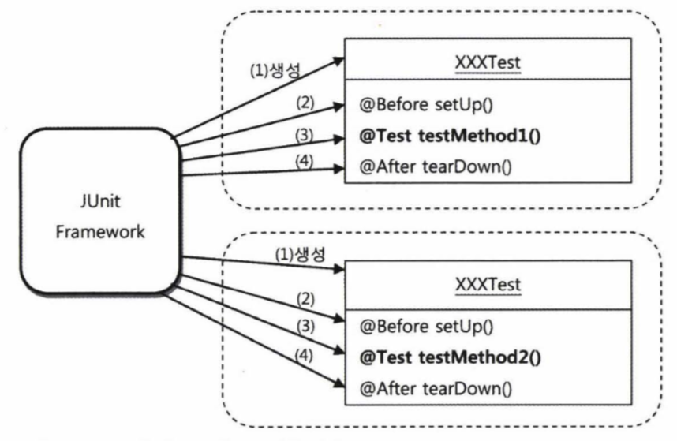

2장 테스트
Created by Yeongmin Kim
LIST
2.1 USERDAOTEST 다시 보기
2.2 USERDAOTEST 개선
2.3 개발자를 위한 테스팅 프레임워크 JUNIT
2.4 스프링 테스트 적용
2.5 학습 테스트로 배우는 스프링
2.6 정리
2.1 UserDaoTest 다시 보기
2.1.1 테스트의 유용성
1장에서 UserDao의 클래스를 책임에 따라 이리저리 분리하고, 인터페이스를 도입하고, 오브젝트 팩토리를 통해 생성하도록 만들고, 또 스프링의 DI 방식을 XML 설정 파일까지 써서 적용했을 때 그것이 처음과 동일한 기능을 수행함을 보장해줄 수 있는 방법에는 어떤 것이 있겠는가?
2.1.2 UserDaoTest의 특징
public class UserDaoTest {
public static void main(String[] args) throws ClassNotFoundException, SQLException {
ApplicationContext context = new GenericXmlApplicationContext("applicationContext.xml");
UserDao dao = context.getBean("userDao", UserDao.class);
User user = new User();
user.setId("Triumph");
user.setName("김영민");
user.setPassword("married");
dao.add(user);
System.out.println(user.getId() + "등록성공");
User user2 = dao.get(user.getId());
System.out.println(user2.getName());
System.out.println(user2.getPassword());
System.out.println(user2.getId() + "조회 성공");
}
}- 자바에서 가장 손쉽게 실행 가능한 main() 메소드
- UserDao의 오브젝트를 가져와서 메소드를 호출한다.
- 테스트에 사용할 입력 값(User 오브젝트)을 직접 코드에서 만들어 넣어준다.
- 테스트의 결과를 콘솔에 출력한다.
- 각 단계의 작업이 에러 없이 끝나면 콘솔에 성공 메시지로 출력해준다.
- DAO에 대한 테스트를 하는데도 서비스 클래스, 컨트롤러, JSP 뷰 등 모든 레이어 기능을 다 만들고 나서야 테스트가 가능하다.
- 테스트를 하는 중에 에러가 나거나 테스트가 실패했다면 과연 어디에서 문제가 발생했는지를 찾아내야 하는 수고도 필요하다.
- 예를들어, 폼을 띄우고 값을 입력하고 등록하는 버튼을 눌렀을 경우 실패하는 원인은 너무나도 다양하다.(DB, SQL, JSP 기타 등등)
- 테스트는 가능하면 작은 단위로 쪼개서 집중해서 할 수 있어야 한다. 관심사의 분리라는 원리가 여기에도 적용된다.
- UserDaoTest는 한 가지 관심에 집중할 수 있게 작은 단위로 만들어진 테스트다.(JSP 서블릿에서 에러가 발생해서 그것을 찾으려고 시간 낭비할 필요가 없다.)
- 작은 단위의 코드에 대해 테스트를 수행한 것을 단위테스트(unit test)라고 한다.
- UserDaoTest는 DB의 상태를 비우고 재시작해야하는 부분이 있어 단위 테스트로서 가치가 없어진다. 통제할 수 없는 외부의 리소스에 의존하는 테스트는 단위 테스트가 아니라고 보기도 한다.
- 단위 테스트를 하는 이유는 개발자가 설계하고 만든 코드가 원래 의도하는대로 동작하는지 개발자 스스로 빨리 확인하고 명확하게 하기 위함이다. 그래서 작은 단위로 테스트하는 것이 편리하다.
- UserDaoTest는 자바 클래스의 main() 메소드를 실행하는 가장 간단한 방법만으로 테스트의 전 과정이 자동으로 진행된다.
- 이렇게 테스트는 자동으로 수행되도록 코드로 만들어지는 것이 중요하다.
지속적인 개선과 점진적인 개발을 위한 테스트
- 1장에서의 초난감 DAO 코드를 UserDaoTest를 이용하여 점진적으로 단위 테스트로 개선했다.
- 테스트를 이용하면 새로운 기능도 기대한 대로 동작하는지 확인할 수 있을 뿐만 아니라, 기존에 만들어 뒀던 기능들이 새로운 기능을 추가하느라 수정한 코드에 영향을 받지 않고 여전히 잘 동작하는지를 확인할 수도 있다.
2.1.3 UserDaoTest의 문제점
- 수동 확인 작업의 번거로움
- 여전히 사람의 눈으로 확인하는 과정이 필요함
- add()에서 User정보를 db에 등록하고, 이를 다시 get()을 이용해 가져왔을 때 입력한 값과 가져온 값이 일치하는지를 테스트코드는 확인해주지 않는다.
- 실행 작업의 번거로움
- 아무리 간단한 main() 메소드라고 하더라도 매번 그것을 실행하는 것은 번거롭다.
2.2 UserDaoTest 개선
2.2.1 테스트 검증의 자동화
add()에 전달한 User 오브젝트에 담긴 사용자 정보와 get()을 통해 다시 DB에 가져온 User 오브젝트의 정보가 서로 정확히 일치하는가를 확인해보도록 합니다.
System.out.println(user2.getName());
System.out.println(user2.getPassword());
System.out.println(user2.getId() + "조회 성공");
수정 후 테스트 코드
if (!user.getId().equals(user2.getId())) {
System.out.println("테스트 실패 (Id)");
} else if (!user.getPassword().equals(user2.getPassword())) {
System.out.println("테스트 실패 (Password)");
} else if (!user.getName().equals(user2.getName())) {
System.out.println("테스트 실패 (Name)");
} else {
System.out.println("조회테스트 성공");
}UserDaoTest가 실패하는 것을 보고싶다면 get()메소드 안의 코드를 하나쯤 강제로 코멘트 처리하고 다시 테스트를 돌려보면 된다.
2.2.2 테스트의 효율적인 수행과 결과 관리
- main() 메소드를 이용한 테스트 작성 방법만으로는 애플리케이션 규모가 커지고 테스트 개수가 많아지면 테스트를 수행히는 일이 점점 부담이 될 것이다.
- 프로그래머를 위한 자바 테스팅 프레임워크라고 불리는 JUnit은 자바 개발 자라면 한 번쯤 들어봤거나 사용해봤을 유명한 테스트 지원 도구다.
- 프레임워크에서 동작하는 코드는 IOC에 의해 main() 메소드도 필요 없고 오브젝트를 만들어서 실행시키는 코드를 만들 필요도 없다.
테스트 메소드 전환
- 새로 만들 테스트는 JUnit 프레임 워크가 요구하는 조건 두가지를 따라야 한다.
- 메소드가 public으로 선언돼야 한다.
- 메소드에 @Test라는 애노테이션을 붙여주는 것이다.
import org.junit.Test;
...
public class UserDaoTest {
@Test
public void addAndGet() throws SQLException {
//JUnit 테스트 메소드는 반드시 public으로 선언돼야 한다.
ApplicationContext context = new ClassPathXmlApplicationContext("applicationContext.xml");
UserDao dao = context.getBean("userDao", UserDao.class);
...
}
}- JUnit은 전통적으로 public 메소드만을 테스트 메소드로 허용 하고 있다. 마지막으로 @Test 애노테이션을 붙여주면 된다.
테스트의 결과를 검증하는 if/else 문장을 JUnit이 제공하는 방법을 이용해 전환해보자.
- assertThat() 메소드는 첫 번째 파라미터의 값을 뒤에 나오는 매처(matcher)라고 불리는 조건으로 비교해서 일치하면 넘어가고 아니면 테스트가 실패하도록 만들어 준다.
- is()는 매처의 일종으로 equals()로 비교해주는 기능을 가졌다.
- JUnit은 예외가 발생하거나 assertThat()에서 실패하지 않고 테스트 메소드의 실행 이 완료되면 테스트가 성공했다고 인식한다.
junit
junit
4.12
test
//UserDaoTest
import static org.hamcrest.CoreMatchers.is;
import static org.junit.Assert.assertThat;
...
public class UserDaoTest {
@Test
public void addAndGet() throws SQLException {
ApplicationContext context = new ClassPathXmlApplicationContext("applicationContext.xml");
UserDao dao = context.getBean("userDao", UserDao.class);
...
assertThat(user2.getId(), is(user.getId()));
assertThat(user2.getName(), is(user.getName()));
assertThat(user2.getPassword(), is(user.getPassword()));
}
//JUnit을 이용해 테스트를 실행해주는 main() 메소드
public static void main(String[] args) {
JUnitCore.main("springbook.user.UserDaoTest");
}
}이 클래스를 실행하면 다음과 같은 메시지가 출력될 것이다.
JUnit version 4.7
Time: 0.578
OK (1 test)만약 코드에 이상이 있어서 assertThat()의 검증에서 실패하면 다음과 같은 메시지가 나올 것이다.
Time: 1.094
There was 1
failure:
1) addAndGet(springbook.dao.UserDaoTest)
java.lang.AssertionError: Expected: is 김영민”
got: null
...
at springbook.dao .UserDaoTest.main(UserDaoTest .iava:36)
FAILURES!!!
Tests run: 1. Failures: 1 - 테스트가 실패하면 OK 대신 FAILURES!!라는 내용이 출력되고, 총 수행한 테스트 중에서 몇 개의 테스트가 실패했는지 보여준다.
- assertThat()은 기대한 결과가 아니면 AssertionError를 던진다.
2.3.1 JUnit 테스트 실행 방법
- 이클립스 run 메뉴의 Run As 항목 중에서 JUnit Test를 선택하면 테스트가 자동으로 실행된다. IDE
- JUnitCore를 이용할 때처럼 main() 메소드를 만들지 않아도 된다.
- 이클립스 Junit 테스트 결과
출처 : 토비의 스프링 3.1 Vol.1
- 테스트가 실패하면 Failure Trace 항목에 자세하게 나온다.
- 이클립스 Junit 테스트 결과
- JUnitCore를 사용해 테스트를 실행하는 것보다 훨씬 편리하다.

출처 : 토비의 스프링 3.1 Vol.1
여러 개발자가 만든 코드를 모두 통합해서 테스트를 수행해야 할 때도 있다.
이때는 빌드 스크립트를 이용해 JUnit 테스트를 실행하고 그 결과를 메일 등으로 통보받는 방법을 사용하면 된다.
2.3.2 테스트 결과의 일관성
UserDaoTest 실행 전에 DB의 USER 테이블 데이터를 모두 삭제해주는 불편함이 있었다.
테스트는 항상 동일한 결과를 나타내야 한다는 원칙에 따라서 코드를 개선해보자.
- deleteAll()
- USER 테이블의 모든 레코드를 삭제
public void deleteAll() throws SQLException {
Connection c = dataSource.getConnection();
PreparedStatement ps = c.prepareStatement("delete from tbl_users");
ps.executeUpdate();
ps.close();
c.close();
}- getCount()
- User 테이블의 레코드 개수를 돌려준다.
public int getCount() throws SQLException {
Connection c = dataSource.getConnection();
PreparedStatement ps = c.prepareStatement("select count(*) from tbl_users");
ResultSet rs = ps.executeQuery();
rs.next();
int count = rs.getInt(1);
rs.close();
ps.close();
c.close();
return count;
}독립 테스트 보다는 연결성이 있어 기존 addAndGet() 테스트를 확장하는 방법을 사용하는 편이 낫다.
deleteAll() 직후에 0이 나오고 add() 직후에는 1이 나온다면 getCount()의 기능이 바르게 동작한다고 볼 수 있다.
deleteAll() 직후에 항상 0이 나오는 것을 보고 deleteAll()의 기능도 바르게 동작한다고 생각할 수 있다.
- deleteAll()과 getCount()가 추가된 addAndGet() 테스트
@Test
public void addAndGet() throws SQLException {
...
dao.deleteAll();
assertThat(dao.getCount(), is(0));
User user = new User();
user.setId("noel");
user.setName("Yeongmin");
user.setPassword("toby");
dao.add(user);
assertThat(dao.getCount(), is(1));
User user2 = dao.get(user.getId());
assertThat(user2.getId(), is(user.getId()));
assertThat(user2.getName(), is(user.getName()));
assertThat(user2.getPassword(), is(user.getPassword()));
}addAndGet() 테스트가 시작될 때 항상 기존의 데이터를 지우고 시작하기 때문에 일관성있는 결과가 나온다.
DB에 남아 있는 데이터와 같은 외부 환경에 영향을 받지 말아야 하는 것은 물론이고, 테스트를 실행하는 순서를 바꿔도 동일한 결과가 보장되도록 만들어야 한다.
2.3.3 포괄적인 테스트
두 개 이상의 레코드를 add() 했을 때는 getCount()의 실행 결과가 어떻게 될까?
getCount() 테스트- 테스트 시나리오
- User 테이블의 데이터를 모두 지우고 getCount()로 레코드 개수가 0임을 확인
- 3개의 사용자 정보를 하나씩 추가하면서 매번 getCount()의 결과가 하나씩 증가하는지 확인
User 클래스에 여러개의 정보를 넣을 수 있도록 파라미터가 있는 User 클래스 생성자를 만든다.
public User(String id, String name, String password) {
this.id = id;
this.name = name;
this.password = password;
}
public User() {
/*
* 자바빈의 규약에 따르는 클래스에 생성자를 명시적으로 추가했을 때는
* 파라미터가 없는 디폴트 생성자도 함께 정의해주는 것을 잊지 말자.
*
*/
}새로 만든 생성자를 이용하면 addAndGet() 테스트의 코드도 다음과 같이 간략히 수정할 수 있다.
UserDao dao = context.getBean("userDao", UserDao.class);
User user = new User("goyonam", "김영민", "springno1");
...
새로운 getCount()에 대한 테스트 메소드를 작성한다.
@Test
public void count() throws SQLException {
ApplicationContext context = new GenericXmlApplicationContext("applicationContext.xml");
UserDao dao = context.getBean("userDao", UserDao.class);
User user1 = new User("no1", "김영미니니", "spekek");
User user2 = new User("no2", "김영미니니22", "spekek2");
System.out.println(dao.getCount());
dao.deleteAll();
assertThat(dao.getCount(), is(0));
System.out.println(dao.getCount());
dao.add(user1);
assertThat(dao.getCount(), is(1));
System.out.println(dao.getCount());
dao.add(user2);
assertThat(dao.getCount(), is(2));
System.out.println(dao.getCount());
}주의해야 할 점은 JUnit은 특정한 테스트 메소드의 실행 순서를 보장해주지 않는다.
모든 테스트는 실행 순서에 상관없이 독립적으로 항상 동일한 결과를 낼 수 있도록 해야 한다.
addAndGet() 테스트 보완
get()이 파라미터로 주어진 id에 해당하는 사용자를 가져온 것인지, 그냥 아무거나 가져온 것인지 테스트에서 검증하지는 못했다.
User를 하나 더 추가해서 두 개의 User를 add() 하고, 각 User의 id를 파라미터로 전달해서 get()을 실행하도록 만든다.
@Test
public void addAndGet() throws SQLException {
...
UserDao dao = context.getBean("userDao", UserDao.class);
User user1 = new User("goyonam", "김영민", "springno1");
User user2 = new User("goyonam2", "김영민2", "springno2");
dao.deleteAll();
assertThat(dao.getCount(), is(0));
dao.add(user1);
dao.add(user2);
assertThat(dao.getCount(), is(2));
User userget1 = dao.get(user1.getId());
assertThat(userget1.getName(), is(user1.getName()));
assertThat(userget1.getPassword(), is(user1.getPassword()));
User userget2 = dao.get(user2.getId());
assertThat(userget2.getName(), is(user2.getName()));
assertThat(userget2.getPassword(), is(user2.getPassword()));
}
- null과 같은 특별한 값을 리턴
- id에 해당하는 정보를 찾을 수 없다고 예외를 던진다.
스프링의 EmptyResultDataAccessException 예외 사용
존재하지 않는 id로 get()호출.
이때 EmptyResultDataAccessException이 던져지면 성공, 아니면 실패.
@Test(expected = EmptyResultDataAccessException.class) // 테스트 중 발생할 것으로 기대하는 예외클래스
public void getUserFailure() throws SQLException {
ApplicationContext context = new GenericXmlApplicationContext ("applicationContext.xml");
UserDao dao = context.getBean("userDao", UserDao.class);
dao.deleteAll();
assertThat(dao.getCount(), is(0));
dao.get("unknown_id"); // 이 메소드 실행 중에 예외가 발생하지 않으면 테스트가 실패한다.
}
테스트가 성공하도록 get() 메소드 코드를 수정.
UserDao를 수정해서 EmptyResultDataAccessException을 던지는 get() 메소드 생성
public User get(String id) throws SQLException {
...
ResultSet rs = ps.executeQuery();
User user = null; // User는 NULL 상태로 초기화 해놓는다.
if (rs.next()) { // id를 조건으로 한 쿼리의 결과가 있으면 User 오브제를 만들고 값을 넣어준다.
user = new User();
user.setId(rs.getString("id"));
user.setName(rs.getString("name"));
user.setPassword(rs.getString("password"));
}
rs.close();
ps.close();
c.close();
if (user == null) throw new EmptyResultDataAccessException(1);
// 결과가 없으면 User는 null 상태 그대로 일 것이다. 이를 확인해서 예외를 던져준다.
return user;
}2.3.4 테스트가 이끄는 개발
getUserFailure() 테스트에는 만들고 싶은 기능에 대한 조건과 행위, 결과에 대한 내용이 잘 표현되어 있다.
| 단계 | 내용 | 코드 | |
|---|---|---|---|
| 조건 | 어떤 조건을 가지고 | 가져올 사용자 정보가 존재하지 않는 경우에 | dao.deleteAll(); assertThat(dao.getCount(), is(0)); |
| 행위 | 무엇을 할 때 | 존재하지 않는 id로 get()을 실행하면 | get("unknow_id") |
| 결과 | 어떤 결과가 나온다 | 특별한 예외가 던져진다 | @Test(expected= EmptyResultDataAccessException.class) |
만들고자 하는 기능의 내용을 담고 있으면서 만들어진 코드를 검증도 해줄 수 있도록 테스트 코드를 먼저 만들고, 테스트를 성공하게 해주는 코드를 작성하는 방식의 개발 방법을 테스트 주도 개발(TDD:Test Driven Development)이라고 한다.
또는 테스트를 코드보다 먼저 작성한다고 해서 테스트 우선 개발(Test First Development)이라고도 한다.
TDD에서는 테스트를 작성하고 이를 성공시키는 코드를 만드는 작업의 주기를 가능한 한 짧게 가져가도록 권장한다.
2.3.5 테스트 코드 개선
@Beforeimport org.junit.Before;
...
public class UserDaoTest {
private UserDao dao; //setUp() 메소드에서 만드는 오브젝트를 메소드에서 사용할 수 있도록 인스턴스 변수로 선언한다.
@Before // junit 이 제공하는 어노테이션 @Test 메소드가 실행되기 전에 먼저 실행돼야 하는 메소드를 정의
public void setUp() {
ApplicationContext context = new ClassPathXmlApplicationContext("applicationContext.xml");
this.dao = context.getBean("userDao", UserDao.class);
}
...
@Test
public void addAndGet() throws SQLException {
... // 각 테스트 메소드에 반복적으로 나타났던 코드를 제거하고 별도의 메소드로 옮긴다.
}
}- 테스트 클래스에서 @Test가붙은 public이고 void형이며 파라미터가 없는 테스트 메소드를 모두 찾는다.
- 테스트 클래스의 오브젝트를 하나 만든다.
- @Before가 붙은 메소드가 있으면 실행한다.
- @Test가 붙은 메소드를 하나 호출하고 테스트 결과를 저장해둔다.
- @After가 붙은 메소드가 있으면 실행한다.
- 나머지 테스트 메소드에 대해 2~5번을 반복한다.
- 모든 테스트의 결과를 종합해서 돌려준다.
서로 주고 받을 정보나 오브젝트가 있다면 인스턴스 변수를 이용해야 한다.
각 테스트 메소드를 실행할 때마다 테스트 클래스의 오브젝트를 새로 만든다.
 출처 : 토비의 스프링 3.1 Vol.1테스트를 수행하는 데 필요한 정보나 오브젝트를 픽스처(fixture)라고 한다.
일반적으로 픽스처는 여러 테스트에서 반복적으로 사용되기 때문에 @Before 메소드를 이용해 생성해두면 편리하다.
UserDaoTest에서는 dao가 대표적인 픽스처다. 테스트 중에 add() 메소드에 전달하는 User 오브젝트들도 픽스처라고 볼 수 있다.
User 오브젝트들은 @before 메소드로 추출해보자.
public class UserDaoTest {
private UserDao dao;
private User user1;
private User user2;
private User user3;
@Before
public void setUp() {
ApplicationContext context = new ClassPathXmlApplicationContext("applicationContext.xml");
this.dao = context.getBean("userDao", UserDao.class);
this.user1 = new User("yeongmin","yeongmin123","spring1");
this.user2 = new User("yeongmin2","yeongmin123222","spring2");
this.user3 = new User("yeongmin3","yeongmin1233333","spring3");
}
}
2.4 스프링 테스트 적용
@Before 메소드가 테스트 메소드 개수만큼 반복되기 때문에 애플리케이션 컨텍스트도 세 번 만들어진다.
빈이 많아지고 복잡해지면 애플리케이션 컨텍스트 생성에 적지 않은 시간이 걸릴 수 있다. 애플리케이션 컨텍스트가 만들어질 때는 모든 싱글톤 빈 오브젝트를 초기화한다.
어떤 빈은 오브젝트가 생성될 때 자체적인 초기화 작업을 진행해서 제법 많은 시간을 필요로 한다.
문제는 애플리케이션 컨텍스트가 초기화될 때 어떤 빈은 독자적으로 많은 리소스를 할당하거나 독립적인 스레드를 띄우기도 한다는 점이다.
테스트는 가능한 한 독립적으로 매번 새로운 오브젝트를 사용함이 좋으나 애플리케이션 컨텍스트처럼 생성에 많은 시간과 자원이 소모되는 경우 에는 테스트 전체가 공유하는 오브젝트를 만들기도 한다.
애플리케이션 컨텍스트는 초기화되고 나면 내부의 상태가 바뀌는 일은 거의 없다.
DB의 상태는 각 테스트에서 알아서 관리할 것이므로 문제가 되지 않는다.
따라서 애플리케이션 컨텍스트는 한 번만 만들고 여러 테스트가 공유해서 사용해도 된다.
하지만, 문제는 Junit이 매번 테스트 클래스의 오브젝트를 만든다는 점이다.
이를 위해, Before 클래스의 스태틱 메소드를 사용하는 방법도 있겠지만 여기서는 스프링이 직접 제공하는 테스트 컨텍스트 프레임워크를 사용해본다.
2.4.1 테스트를 위한 애플리케이션 컨텍스트 관리
ApplicationContext context = new GenericXmlApplicationContext("applicationContext .xml "); // 이 부분을 제거스프링이 제공하는 @Autowired 어노테이션을 붙여주고, 마지막으로 클래스 레벨에 @Runwith와 @ContextConfiguration 어노테이션을 추가합니다.
// 스프링 테스트 JUnít 확장기능지정
@RunWith(SpringlUnit4ClassRunner.class)
// 자동으로 만들어주는 애플리케이션 컨텍스트 위치 지정
@ContextConfiguration(locations="/applicationContext.xml");
public class UserDaoTest {
@Autowired
private ApllicationContext context; // 인스턴스 변수 선언 - 테스트가 만들어지면 자동 주입
...
@Before
public void setUp() {
this.dao = this.context.getBean("userDao", UserDao.class);
...
}
...
}@Runwith는 JUnit 프레임워크의 테스트 실행 방법을 확장할 때 사용하는 어노테이션이다.
SpringJUnit4ClassRunner라는 JUnit용 테스트 컨텍스트 프레임워크 확장 클래스를 지정해주면 JUnit이 테스트를 진행하는 중에 테스트가 사용할 애플리케이션 컨텍스트를 만들고 관리히는 작업을 진행해준다.
@ContextConfiguration은 자동으로 만들어줄 애플리케이션 컨텍스트의 설정파일 위치를 지정한것이다.
확인용 코드를 추가해보고 어떤 일이 일어나는지 확인해보도록 하자.
@Before
public void setUp() {
System.out.println(this.context);
System.out.println(this);이때 인스턴스 변수인 context와 테스트 오브젝트 자신인 this를 콘솔에 출력하게 한다.
실행 결과는 디음과 같다.
org.springframework.context.support.GenericApplicationContext@d3d6f:
springbook.dao.UserDaoTest@115dÐ6c
org.springframework.context.support.GenericApplicationContext@d3d6f:
springbook.dao.UserDaoTest@116318b
org.springframework.context.support.GenericApplicationContext@d3d6f:
springbook.dao.UserDaoTest@15eÐc2bUserDaoTest의 오브젝트는 매번 주소 값이 다르다.
소요 시간은 첫번째 테스트만 조금 더 길다. 그 이유는 최초로 테스트가 실행될 때 애플리케이션 컨텍스트가 만들어지기 때문이다. 그 다음부터는 재사용으로 시간이 짧아진다.
수백 개의 테스트 클래스를 만들었는데 모두 같은 설정파일을 사용한다고 해도 테스트 전체에 걸쳐 단 한 개의 애플리케이션 컨텍스트만 만들어져 사용된다. 이 덕분에 테스트 성능이 대폭 향상된다.
@Autowired가 붙은 인스턴스 변수가 있으면, 테스트 컨텍스트 프레임워크는 변수 타입과 일치하는 컨텍스트 내의 빈을 찾는다. 타입이 일치하면 주입한다. 생성자나 수정자 메소드 같은 메소드가 필요없다.
이상한 점은 앞에서 만든 테스트 코드에서는 applicationContext.xml 파일에 정의된 빈이 아니라, ApplicationContext라는 타입의 변수에 @Autowired를 붙였는데 애플리케이션 컨텍스트가 DI됐다.
스프링 애플리케이션 컨텍스트는 초기화할 때 자기 자신도 빈으로 등록한다. 따라서 애플리케이션 컨텍스트에는 ApplicationContext 타입의 빈이 존재하는 셈이고 DI도 가능한 것이다.
따라서 getBean()을 사용하지 않고 아예 UserDao 빈을 직접 DI 받을 수도 있다.
//UserDao를 직접 DI 받도록 만든 테스트
...
public class UserDaoTest {
@Autowired
UserDao dao; // UserDao 타입 빈을 직접 DI 받는다.
}XML에 dataSource라는 이름으로 등록한 SimpleDriverDataSource 타입의 빈을 가져오고 싶다면， 디음과 같은 인스턴스 변수를 추가해주기만 하면 된다.
@Autowired
SimpleDriverDataSource dataSource;
단, @Autowired는 같은 타입의 빈이 두 개 이상 있는 경우에는 타입만으로는 어떤 빈을 가져올지 결정할 수 없다.
@Autowired는 타입으로 가져올 빈 하나를 선택할 수 없는 경우에는 변수의 이름과 같은 이름의 빈이 있는지 확인한다. 변수 이름으로도 빈을 찾을 수 없는 경우에는 예외가 발생한다.
그런데 SimpleDriverDataSource 타입의 변수로 선언하는 방법과 dataSource 타입으로 선언하는 방법 중 어느 것이 나을까?
그것은 테스트에서 빈을 어떤 용도로 사용하느냐에 따라 다르다.
단순히 DataSource에 정의된 메소드를 테스트에서 사용하고 싶다면 DataSource 타입으로 받는 게 좋다.
반면에 테스트에서 SimpleDriverDataSource라는 타입의 오브젝트 자체에 관심있는 경우에는 SimpleDriverDataSource 타입으로 선언해야 한다. 예를 들어 XML에서 프로퍼티로 설정한 DB 연결 정보를 확인하고 싶다거나 SimpleDriverDataSource 클래스의 메소드를 직접 이용해서 테스트할 경우도 있다.
2.4.2 DI와 테스트
SingleConnectionDataSource를 사용해서 테스트용 DB 커텍션을 만들어 두고 사용해보자.
다중 사용자 환경에서는 사용할 수 없지만 순차적으로 진행되는 테스트에서라면 문제 없다.
...
/*
* 테스트 메소드에서 애플리케이션 컨텍스트의 구성이나
* 상태를 변경한다는 것을 테스트 컨텍스트 프레임워크에 알려준다.
*/
@DirtiesContext
public class UserDaoTest {
@Autowired
UserDao dao;
@Before
public void setUp() {
...
// 테스트에서 UserDao가 사용할 DataSource 오브젝트를 직접 생성
DataSource dataSource = new SingleConnectionDataSource(
"jdbc:mysql://localhost/testdb", "root", "admin", true);
dao.setDataSource(dataSource); //코드에 의한 수동 DI
}
}이 방법의 장점은 XML 설정파일을 수정하지 않고도 테스트 코드를 통해 오브젝트 관계를 재구성할 수 있다는 것이다. 예외적인 상황을 만들기 위해 일부러 엉뚱한 오브젝트를 넣거나, 위와 같이 테스트용으로 준비된 오브젝트를 사용하게 할 수 있다.
하지만 위의 테스트 코드는 애플리케이션 컨텍스트에서 가져온 UserDao 빈의 의존관계를 강제로 변경한다. 한 번 변경하면 나머지 모든 테스트를 수행하는 동안 변경된 애플리케이션 컨텍스트가 계속 사용될 것이다.
@DirtiesContext 라는 어노테이션을 추가해서 스프링의 테스트 컨텍스트 프레임워크에게 해당 클래스의 테스트에서 애플리케이션 컨텍스트의 상태를 변경한다는 것을 알려준다. 테스트 메소드를 수행하고 나면 매번 새로운 애플리케이션 컨텍스트를 만들어서 다음 테스트가 사용하게 해준다. 하지만 이 때문에 애플리케이션 컨텍스를 매번 만드는건 좀 찝찝하다.
테스트 코드에서 빈 오브젝트에 수동으로 DI 하는 방법은 장점보다 단점이 많다. 코드가 많아져 번거롭기도 하고 애플리케이션 컨텍스트도 매번 만들어야 해서 부담이 있다. Dao가 테스트에서만 다른 DataSource를 사용하는 방법을 써보도록 하자.
그리고 UserDaoTest의 @ContextConfiguration 어노테이션에 있는 locations 엘리먼트의 값을 test-allicationContext.xml로 변경해준다. 번거롭게 수동 DI나 @DirtiesContext 어노테이션도 필요없다.
마지막으로 살펴볼 DI를 테스트에 이용하는 방법은 아예 스프링 컨테이너를 사용하지 않고 테스트를 만드는 것이다. DI만을 이용해서 만들어진 테스트 코드를 살펴보자.
//애플리케이션 컨텍스트 없는 DI 테스트
public class UserDaoTest {
UserDao dao; // @Autowired가 없다.
...
@Before
public void setUp() {
...
dao = new UserDao();
DataSource dataSource = new SingleConnectionDataSource(
"jdbc:mysql://localhost/testdb", "root", "admin", true);
dao.setDataSource(dataSource);
//오브젝트 생성, 관계설정 등을 모두 직접 해준다.
}
}
테스트를 위한 DataSource를 직접 만드는 번거로움은 있지만 애플리케이션 컨텍스트를 아예 사용하지 않으니 코드는 더 단순해지고 이해하기 편해졌다. 애플리케이션 컨텍스트를 만들지 않으니 테스트 시간도 절약된다.
하지만 Junit은 매번 새로운 테스트 오브젝트를 만들기 때문에 UserDao 오브젝트가 새롭게 만들어진다는 단점도 있다. 하지만 가벼운 오브젝트이니 별 부담 없다.
DI를 테스트에 이용하는 세 가지 방법, SingleConnectionDataSource, 테스트를 위한 별도의 DI, 컨테이너 없는 DI 중에 어떤 방법이 제일 좋을까?
세 가지 방법 모두 장단점이 있고 상황에 따라 유용하게 쓸 수 있다.
항상 스프링 컨테이너 없이 테스트할 수 있는 방법을 가장 우선적으로 고려하자. 이 방법이 수행 속도가 가장 빠르고 테스트 자체가 간결하다.
여러 오브젝트와 복잡한 의존관계를 갖고 있을 경우는 스프링의 설정을 이용한 DI 방식 테스트가 유리하다. test-applicationContext.xml 처럼 테스트 전용 설정파일을 따로 사용하는 편이 좋다.
때로는 예외적인 의존관계를 강제로 구성해서 테스트해야 할 경우가 있다. 이때는 컨텍스트에서 DI받은 오브젝트에 다시 테스트 코드로 수동 DI 해서 테스트하는 방법을 사용하면 된다. @DirtiesContext를 이용한 방법이다.
2.5 학습 테스트로 배우는 스프링
개발자가 자신이 만든 코드가 아닌 다른 사람이 만든 코드와 기능에 대한 테스트를 작성할 필요가 있을까? 때로는 다른 개발팀에서 만들어서 제공한 라이브러리 등에 대해서도 테스트를 작성해야 한다. 이런 테스트를 학습테스트라고 한다.
학습 테스트의 목적- 자신이 테스트를 만들려고 하는 기술이나 기능에 대한 이해
- 빠르고 정확하게 사용법을 익히는 것
2.5.1 학습 테스트의 장점
테스트를 작성하면서 학습하면 다음과 같은 장점이 있다.
- 다양한 조건에 따른 기능을 손쉽게 확인해볼 수 있다.
- 학습 테스트 코드를 개발 중에 참고할 수 있다.
- 프레임워크나 제품을 업그레이드할 때 호환성 검증을 도와준다.
- 테스트 작성에 대한 좋은 훈련이 된다.
- 새로운 기술을 공부하는 과정이 즐거워진다.
※ 참고자료 : cd에 담긴 예제 프로젝트 내의 springbook.learnngtest 패키지
2.5.2 학습 테스트 예제
JUnit 테스트 오브젝트 테스트package springbook.learningtest.junit;
...
import static org.hamcrest.CoreMatchers.is;
import static org.hamcrest.CoreMatchers.not;
import static org.hamcrest.CoreMatchers.sameInstance;
import static org.junit.Assert.assertThat;
import org.junit.Test;
public class JUnitTest {
static JUnitTest testObject;
@Test public void test1() { //sameInstance()는 실제로 같은 오브젝트인지 비교한다.
assertThat(testObjects, is(not(sameInstance(testObject))));
testObject = this;
}
@Test public void test2() {
assertThat(testObjects, is(not(sameInstance(testObject))));
testObject = this;
}
@Test public void test3() {
assertThat(testObjects, is(not(sameInstance(testObject))));
testObject = this;
}
}이 방식의 문제점은 직전 테스트에서 만들어진 테스트 오브젝트와만 비교한다는 것이다. 좀 더 개선해보자.
세 개의 테스트 오브젝트 중 어떤 것도 중복이 되지 않는다는 것을 확인하도록 검증 방법을 바꾼다.
import static org.junit.matchers.JUnitMatchers.hasItem;
...
public class JUnitTest {
static Set<JUnitTest> testObjects = new HashSet<JUnitTest>();
@Test public void test1() {
assertThat(testObjects, is(not(hasItem(this))));
testObjects.add(this);
}
@Test public void test2() {
assertThat(testObjects, is(not(hasItem(this))));
testObjects.add(this);
}
...
}먼저 스태틱 변수로 테스트 오브젝트를 저장할 수 있는 컬렉션을 만들어두고 등록되어있는지 확인하고, 없으면 자기자신을 추가한다. 순서에 상관없이 오브젝트 중복여부를 확인할 수 있다.
스프링의 테스트용 애플리케이션 컨텍스트는 테스트 개수에 상관없이 한 개만 만들어지고 모든 테스트에서 공유된다.
<?xml version="1.0" encoding="UTF-8"?>
<beans xmlns="http://www.springframework.org/schema/beans"
xmlns:xsi="http://www.w3.org/2001/XMLSchema-instance"
xsi:schemaLocation="http://www.springframework.org/schema/beans
http://www.springframework.org/schema/beans/spring-beans.xsd">
</beans>@JunitTest에 @RunWith와 @ContextConfiguration 어노테이션을 추가하고, 방금 만든 설정파일을 사용하는 텍스트 컨텍스트를 적용한다.
import statc org.hamcrest.CoreMatchers.nullValue;
import static org.junit.Assert.assertTrue;
import static org.junit.matchers.JUnitMatchers.either;
...
@RunWith(SpringJUnit4ClassRunner.class)
@ContextConfiguration
public class JUnitTest {
@Autowired ApplicationContext context;
// 테스트 컨텍스트가 매번 주입해주는 애플리케이션 컨텍스트는 항상 같은 오브젝트인지 테스트로 확인해본다.
static Set<JUnitTest> testObjects = new HashSet<JUnitTest>();
static ApplicationContext contextObject = null;
@Test public void test1() {
...//assertThat사용
assertThat(contextObject == null || contextObject == this.context, is(true));
contextObject = this.context;
}
@Test public void test2() {
...//assertTrue사용, is(true) 구문이 사라짐.
assertTrue(contextObject == null || contextObject == this.context);
contextObject = this.context;
}
@Test public void test3() {
...//assertThat 사용, 조건문 대신 matcher 조합 사용.
assertThat(contextObject, either(is(nullValue())).or(is(this.context)));
contextObject = this.context;
}
}테스트 메소드에서 매번 동일한 애플리케이션 컨텍스트가 context 변수에 주입됐는지 확인한다.
2.5.3 버그 테스트
버그 테스트는 일단 실패하도록 만들어야 한다.
버그가 원인이 되서 테스트가 실패하는 코드를 만드는 것이다.
- 테스트의 완성도를 높여준다.
- 버그의 내용을 명확하게 분석하게 해준다.
- 기술적인 문제를 해결하는데 도움이 된다.
정리
- 테스트는 자동화돼야 하고, 빠르게 실행할 수 있어야 한다.
- main() 테스트 대신 JUnit 프레임워크를 이용한 테스트 작성이 편하다.
- 테스트 결과는 일관성이 있어야 한다. 코드의 변경 없이 환경이나 테스트 실행 순서에 따라서 결과가 달라지면 안 된다.
- 테스트는 포괄적으로 작성해야 한다. 충분한 검증을 하지 않는 테스트는 없는 것보다 나쁠 수 있다.
- 코드 작성과 테스트 수행의 간격이 짧은수록 효과적이다.
- 테스트를 먼저 만들고 테스트를 성공시키는 코드를 만들어가는 테스트 주도 개발 방법(TDD)도 유용하다.
- @Before, @After를 사용해서 테스트 메소드들의 공통 준비 작업과 정리 작업을 처리할 수 있다.
- 스프링 테스트 컨텍스트 프레임워크를 이용하면 테스트의 성능을 향상시킬 수 있다.
- 동일한 설정파일을 사용하는 테스트는 하나의 애플리케이션 컨텍스트를 공유한다
- @Autowired를 사용하면 컨텍스트의 빈을 테스트 오브젝트에 DI 할 수 있다.
- 기술의 사용 방법을 익히고 이해를 돕기 위해 학습 테스트를 작성하자.
- 오류가 발견될 경우 그에 대한 버그 테스트를 만들어 두면 유용하다.